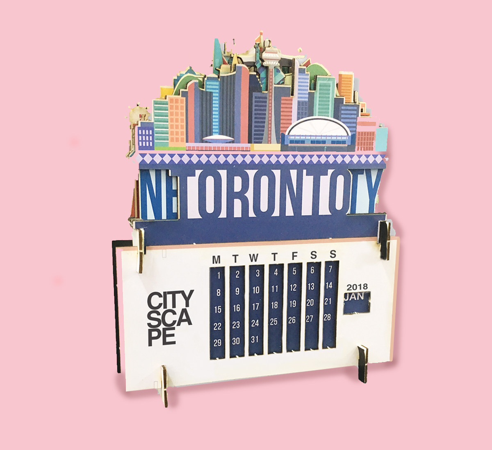
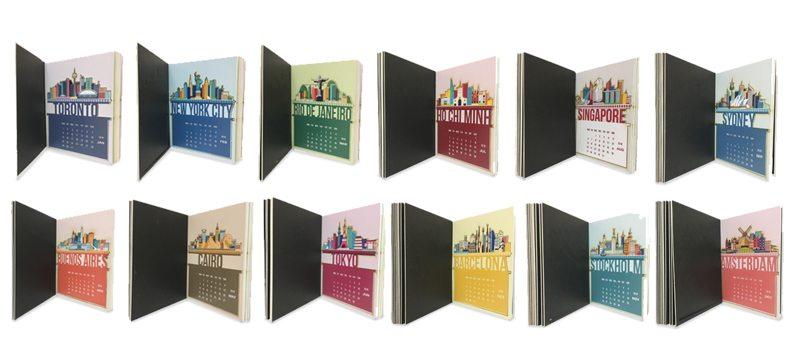
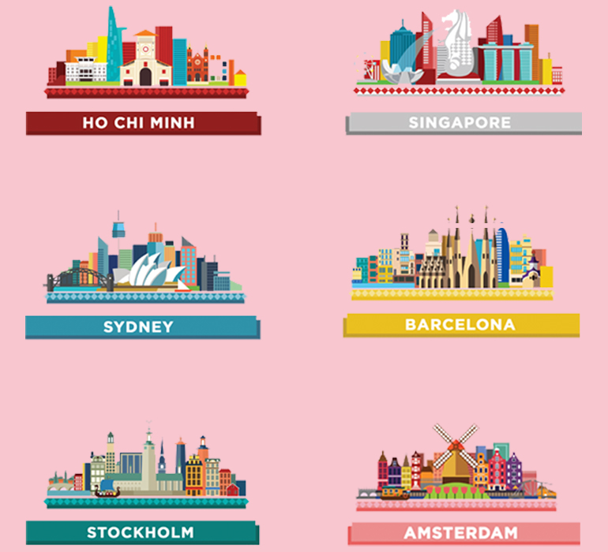
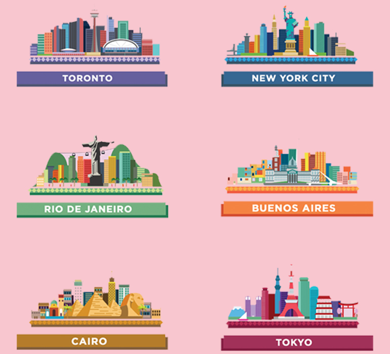
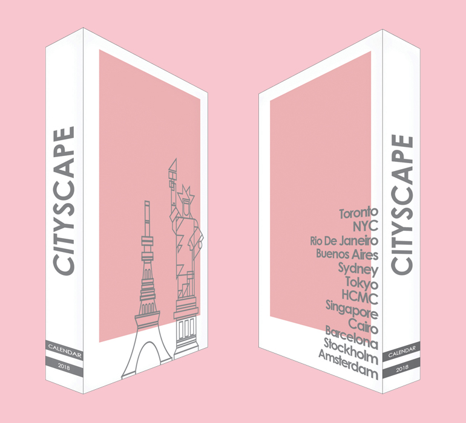
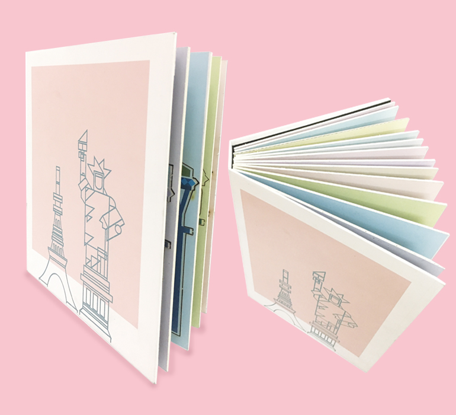
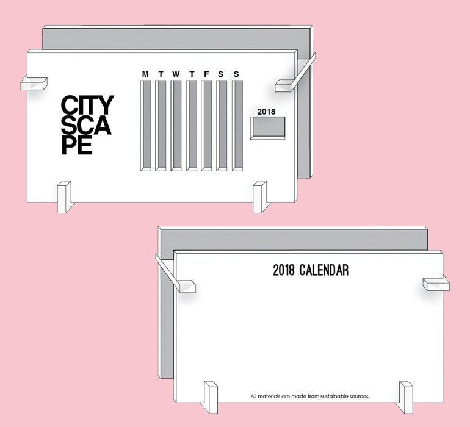
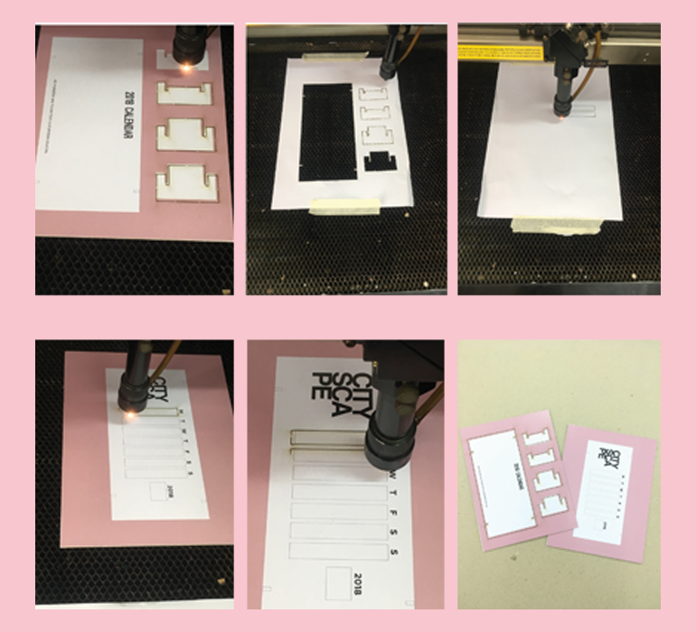

2018 Calendar

SKILLS
AI, PS, CorelDRAW
DESCRIPTION
This project is completely graphic design based with technology production. The idea was having the calendar as a book and the user could take put the pieces and put them together to create a desk calendar. I created a 2018 calendar with different cities for each of the 12 months. All of the graphics are done by done me using Photoshop and Illustrator.
I chose to do cities from all 7 continents (except Antartica) because I wanted to explore the colours, cultures and atmospheres from different areas of the world.
-

City Illustrations
I researched the cities beforehand to fully capture their essence when it came to designing. I designed and created all the of the cities in Illustator. -

City Illustrations
I added iconic attractions to make the skylines more recognisable. I dedicated an unique colour for each city to make everything more vibrant and stand out from each other. -

Book Cover
My calendar was stored inside a book because it was better for storage and transportation. My design for the book cover was simple and minimalistic to create a contrast with the colourful pages inside. -

Book Cover
This was the physical calendar book cover. -

Calendar Stand
For the calendar stand, I also made it a simple white rectangle with coutouts to display the months and dates. The stand came with tabs so that the user could assemble it together. -

Calendar Stand
I used a laser cutter to achieve these cuteouts.